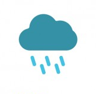
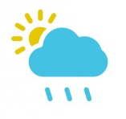
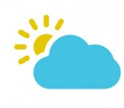

| Vandaag: | Morgen: | Overmorgen: | Daarna: | |
|---|---|---|---|---|
|  |  |  | ||
| Minimum temperatuur | 5ºC= | 7ºC | 9ºC | 11ºC |
| Maximum temperatuur | 15ºC | 19ºC | 21ºC | 25ºC |
| Wind: | Deze week geen wind van betekenis.. | Deze week geen wind van betekenis.. | Deze week geen wind van betekenis.. | Deze week geen wind van betekenis.. |
Vandaag is het nog erg nat, maar vanaf morgen breekt de zon weer door en wordt het geleidelijk aan beter. Op sommige plaatsen zal het morgen al de hele dag droog zijn.